当校のグループでは、飲食業界を専門とした就職・転職をサポートしている「飲食人キャリア」があります。
卒業される方のスキルに合わせたお仕事先をご紹介致します。
既に卒業された方は、当校よりご紹介した企業に入社されて頑張っておられます。
上質な技術と高い基礎力が身につく
未経験から目指す中華料理人の道
中華マイスター専科は「 3ヶ月でプロの中華料理人になること」を目標にした短期集中型の濃密なプログラムです。
一般的な1年制の調理師学校のカリキュラムを現場実践型の技・座学を中心に、3ヶ月という短期間に圧縮しました。
"専門学校を出たけど現場で通用しない"技術ではなく、現場で役立ち、
即実践可能な基礎・応用技術を習得することができます。
飲食業界未経験の方でもプロレベルの中華料理の知識、技術を身に付けていただけるカリキュラム構成となっております。
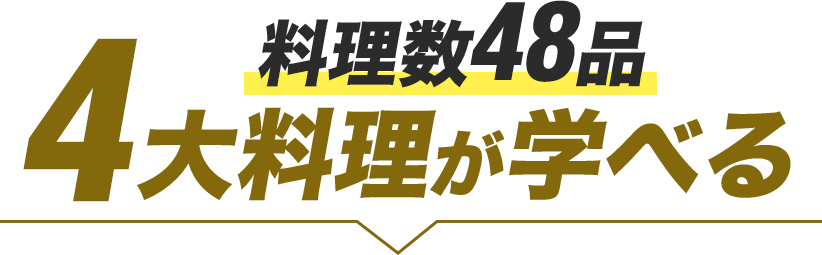
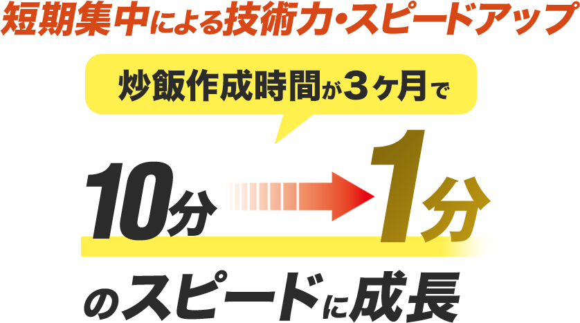
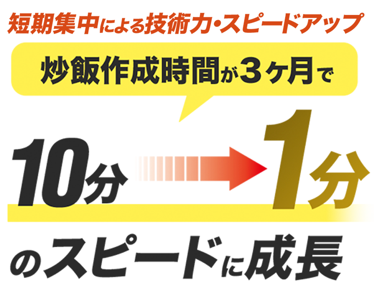
ミシュラン品質!
調味料・香辛料の黄金比率の
味付けの方程式が習得できる
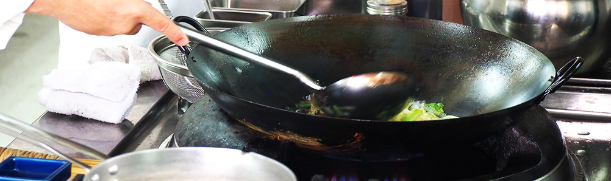
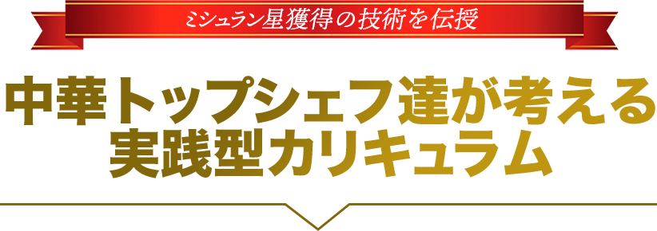
中華料理は、素晴らしい文化と美味しい料理が融合したもの。
中華料理人としての夢を実現してください！
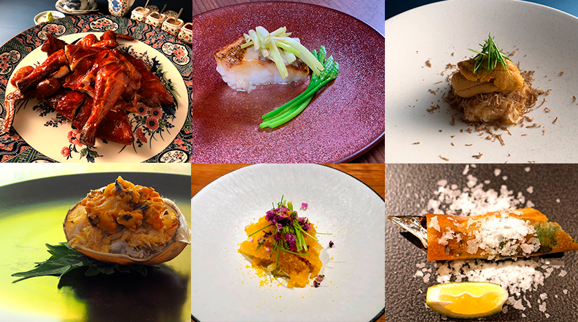
ミシュランガイド一つ星6年連続獲得
澤田シェフが伝える開校への思い
私自身が中華料理を専攻した際、中華料理人のイメージがダサいという偏見に直面し、
多くの調理師専門学校の生徒たちはフランス料理や日本料理を選びがちでした。
しかし、中華料理は世界的に高い評価を受ける料理であり、
私はその魅力を広く伝えたいと考えています。
「中華マイスター専科」では、中華料理の基本的な技術からコース料理の作り方までを網羅し、
即戦力になる中華料理人の育成に力を入れています。
私が経営する東京・恵比寿のレストランでの経験を生かし、若手の育成に特に力を注いでおり、
課外授業では実際の店舗へ足を運び、実習していただけます。
また、「中華マイスター専科」では、10年以上中華料理人としてのキャリアを積んだ講師陣を採用しており、彼らが持つ豊富な経験や技術を学生たちに伝えています。
中華料理人の人材不足を解消するために取り組んでいることに加え、中華料理の文化や歴史にも触れながら、より深い知識と技術を身につけていただけます。
私が目指すのは、中華料理のイメージを変え、多くの若者が中華料理を選択するようになることです。
中華料理は、素晴らしい文化と美味しい料理が融合したものであり、私たちはその魅力を広く伝えることで、
世界中の人々に愛される料理となることを目指しています。
是非、「中華マイスター専科」で、中華料理人としての夢を実現してください。
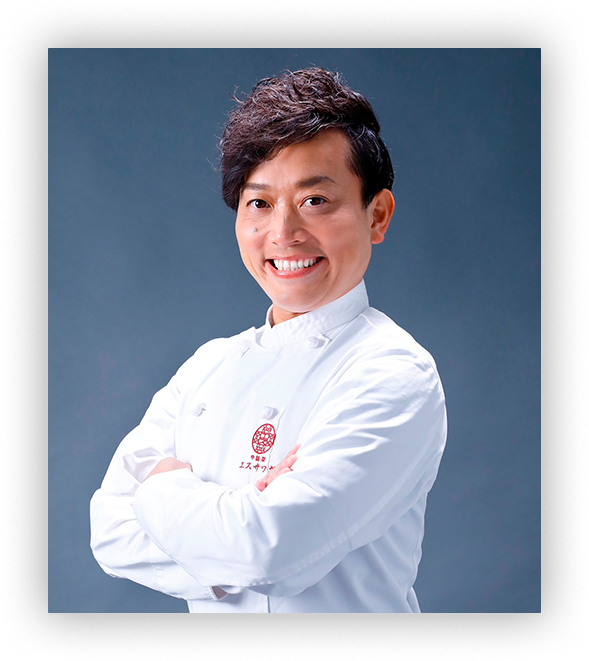
澤田州平氏 プロフィール
兵庫県出身。神戸村野工業高等学校を卒業後、中華料理店でのアルバイトを経て辻調理師専門学校に進学。2000年に卒業後、兵庫「新阪急ホテル」に就職。
『鄧家荘』を経て、香港の「スタンフォードホテル香港」や『福臨門酒家』で修業。 愛知の『福臨門酒家』や東京の『火龍園』、『グランドハイアット東京』で経験を重ね、大阪の『ジョーズ シャンハイ ニューヨーク』や『中華旬彩サワダ』の料理長に。
2016年、大阪市内に『中国菜 エスサワダ』を開業。
2018年12月に法人、株式会社セブンスイノベーションを設立。
その後も、2019年に『中華バル サワダ』、2020年に『中国菜 エスサワダ 西麻布』（東京）、2021年に『大阪中華サワダ飯店』、2022年に『シビカラ担々麺澤田商店』をオープン。
飲食業界を多角的に捉え、本格的に事業化に乗り出す。
日本の中華料理界は、まさに「ブルー・オーシャン」
「中華料理人は、稼げるのか？」という質問がしばしば聞かれます。
現在、日本の中華料理は世界的にNo.1の地位を獲得しています。
その理由は、私たち日本の中華料理人が四大中華料理の長所を徹底的に学び、
巧みに融合させているからです。
また、日本人特有の繊細さにより、味付けや調味料のバランス、盛り付けなどが美しく表現されます。
日本には豊かな出汁文化が根付いており、旨みを最大限に引き出すことが得意で、海鮮も新鮮で生で食べることができるため、料理のバリエーションが増え、一層の美味しさが追求できます。
現在では、高級中華料理店を開業する人々も増え、
開業初年度で「年商1億円」という夢ではない世界が広がっています。
私は、日本の中華料理に非常に明るい未来があると感じています。
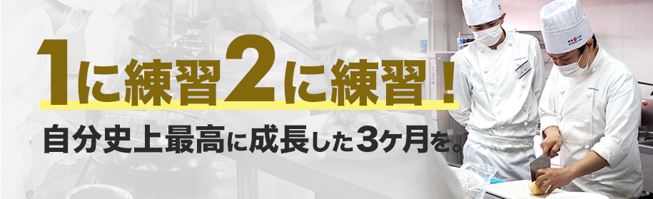
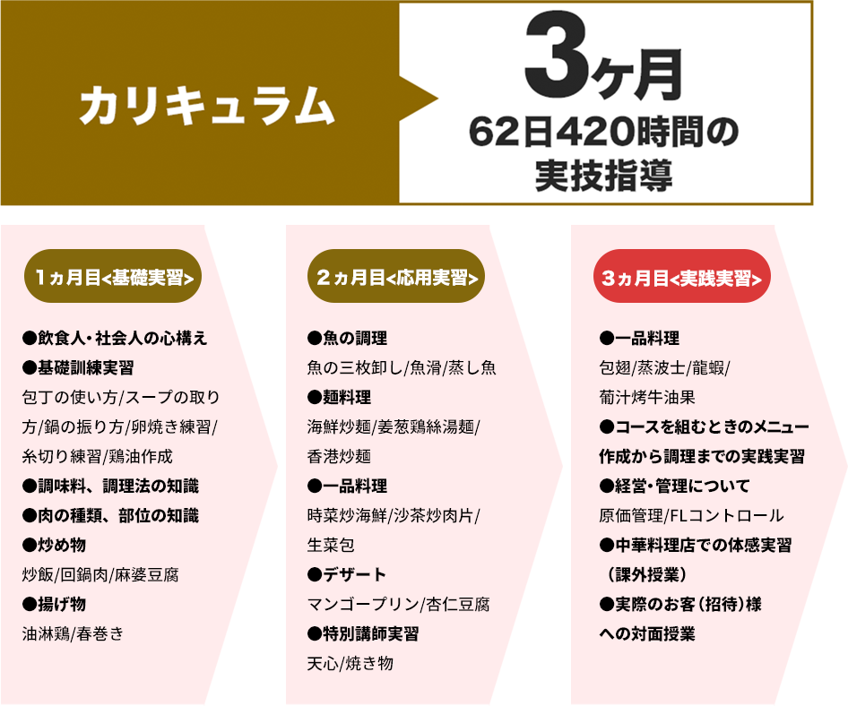
実習・就職先提携店舗
中国菜 エスサワダ
西天満本店
開業2016年11月に開業。
開業一年足らずでミシュラン一つ星を獲得し、現在中華のジャンルで6年連続星受賞し続けているのは関西唯一。
本場香港で本格広東料理の修行を重ね、季節の旬な食材を使用し、和やフレンチ、料理のジャンルの枠に囚われない中華に拘った、日本人の中華の料理人、澤田州平ならではの繊細な料理を生み出す、高級中華料理店。
大阪府大阪市北区西天満4-6-28
ニュー真砂ビル1階
06-6809-1442 / 席数27席
中国菜 エスサワダの詳細はこちら
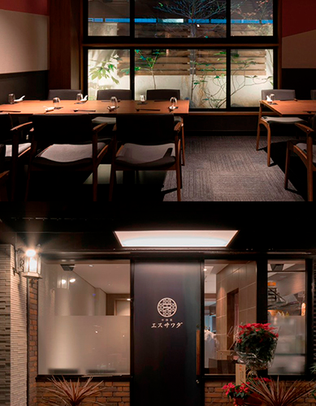
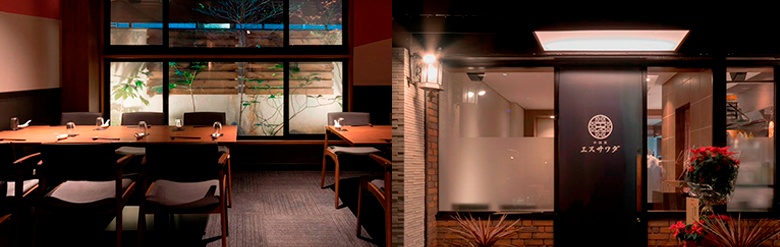
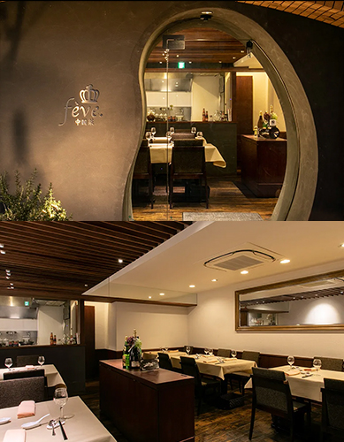
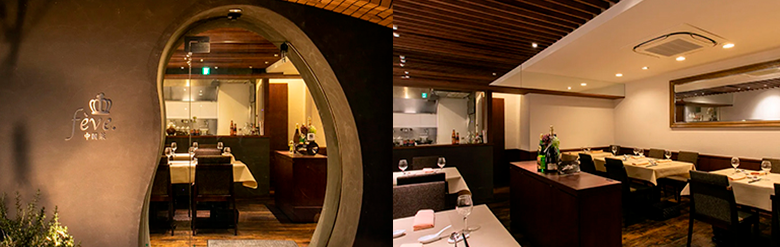
中国菜 fève（フェーヴ）
アジア各国の若手料理人が腕を競う2014年「李錦記青年厨師中餐国際コンクール」で銀賞を受賞した経験のある畑川豊シェフがオーナーを務める中国料理店。
豊かな旨味と調和した調味料の絶妙なバランスと繊細な盛り付けによって、まさに芸術品のような美しさの本格的な中華料理を提供。予約サイトのレビューでは、大阪内で常に上位をキープしているほどの人気店。
〒531-0076
大阪府大阪市北区大淀中1-12-7メゾンインペリアル大淀1F
TEL:06-6485-8281
席数：20席
中国菜 fève（フェーヴ）の詳細はこちら
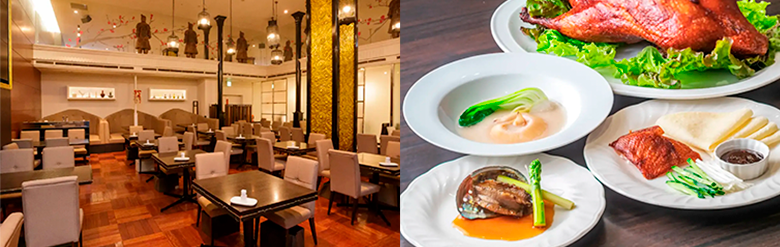
名家 華中華
デザイナー神谷利徳氏によるモダンなインテリアと、中国美術コレクションが融合した空間で、北京ダック、アワビ、フカヒレなどの厳選食材の多彩なコースを展開。
関西最大級(商用施設内)の140インチ液晶ダイナミックビジョンを備え、ジャズが流れる店内で伝統と現代がみごとに調和したヌーベルシノワがメディアでも取り上げられ話題に。
〒530-0001
大阪府大阪市北区梅田2-2-22 ハービスPLAZA ENT5F
TEL:06-6342-1168
席数：110席
名家 華中華の詳細はこちら
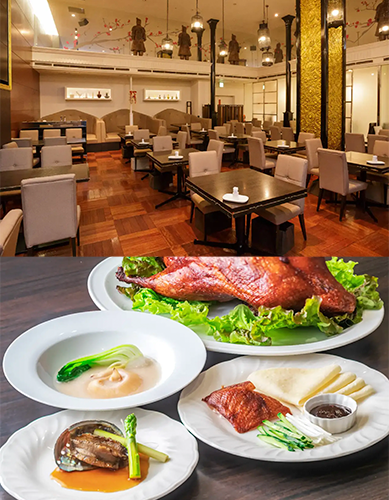

2ヵ月の短期集中コースで夜間にプロの中華料理人の技術を身につけます。
卒業後はキャリアプランをサポート！
キャリア担当と共に就職を目指すのもよし、
開業を講師がプロデュースする支援も行います。


寿司マイスター専科受講（3ヶ⽉）後、
提携店舗にて21ヶ⽉（21ヶ⽉⽬以降は海外就職決定まで）の実習を提供します。
ビザ取得もサポートし、さらにベルリッツと提携し語学サポートも完備。
世界で活躍が出来るグローバル寿司職⼈を育成します。

飲食人大学では、生徒ひとりひとりに寄り添うことを大切にしています。
現場実践型カリキュラム＆個別キャリアサポートのある飲⾷⼈⼤学だからこそ、
国内・海外就職や転職、独⽴開業などが実現可能に。
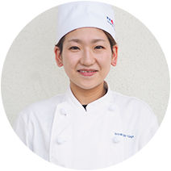
中華マイスター専科1期生
<2023年6月卒業>
<2023年6月卒業>
田畑稀恵さん（1995年生まれ）
もともとアメリカンチャイニーズのお店で働いていましたが、より本格的な中華料理を学びたいと思い、中華マイスター専科に入学を決意しました。
中華マイスター専科の魅力は、本格的な調理技法を学べることはもちろん、素晴らしい教育環境にあります。
講師の先生方は、現場経験が豊富なシェフの方で、料理に対する情熱とこだわりを持っており、親身になって技術指導してくださり、料理や食材の知識に関してもしっかり教えてくれるので、常に学びがあります。
また、学校には中華料理のための設備や調理器具があり、私たちが自信を持って調理技術を磨くことができる環境を提供しています。
女性の料理人は少ないと聞いたことがありますが、私は中華マイスター専科で学んで、その傾向を変える一員になりたいと思っています。
卒業後は、たくさんのお店で経験を積んで、女性料理人として活躍し、お客様や家族に喜んでもらえることが目標です。
中華マイスター専科での学びが私の目標を実現するための大きな一歩となると信じています。
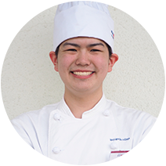
中華マイスター専科1期生
<2023年6月卒業>
<2023年6月卒業>
宮本恵介さん（2003年生まれ）
中華マイスター専科は、中華料理や食材の知識を総合的に学べ、実技の授業でしっかりと技術を教えてもらえるので、日々、知識と技術が身についていく感覚を実感できます。
初心者からでも基本的な中華鍋の振り方から講師の先生がついて教えてくれるので安心です。
また、炒飯やチンジャオロース、麻婆豆腐など、たくさんの種類の実践的な料理を学ぶことができます。
また、町中華からレストラン、ミシュラン店など、豊富な経験を持っている澤田シェフや講師の先生から直接学べたり、お話を聞けるところがとても魅力に感じています。
僕たちからの質問にも、現場的な意見も踏まえ、的確に回答してくれます。
私自身は、中華マイスター専科で学んだ知識や技術を活かし、将来的には自分自身がシェフとしての独立や開業といったキャリアを築き上げたいと思っています。
この学校での学びは、即戦力となる技術だけでなく、料理に対する情熱や誇りを育むことができると感じています。
将来の夢に向けて、更なるスキルアップを目指し、日々努力していきたいと思っています。
年齢や経験の制限は設けておりませんので、どなた様でも入学のお申込はしていただけます。
しかし、当校では、卒業後に飲食の現場でしっかりと通用する為に技術習得をしていただく場です。
お稽古事の感覚で入学されると非常に大変だと思います。
よって、目的意識の合致している方に限定させていただいています。
大丈夫です。受講生の約8割が飲食業界未経験の方です。
包丁の扱い方から調理の基礎など、全くの未経験の方でも細かく丁寧に指導致します。
寮などの宿泊設備はご用意しておりませんが、在学中の滞在場所としてお住いのご紹介はしておりますので、お気軽にご相談下さい。
学生証の発行は行っておりません。当校は通学定期は対象外となります。
遠方や海外にお住いの方につきましては、ZOOMやLINEのビデオ通話で面接をさせていただいております。